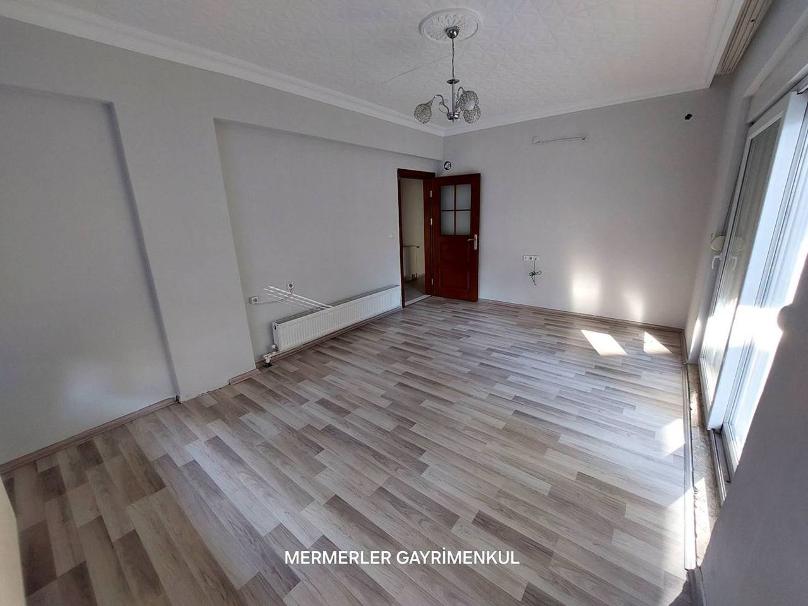

Mermerler
Korkuteli'nin ev, arsa ve tarla defteri · 15 güncel ilan · 22 Ekim
No. 01 — Kapak ilanı
Uzunoluk'ta güneş alan bir giriş kat

Uzunoluk Mahallesi'nde, merkeze yürüme mesafesinde 130 metrekarelik bir 3+1. Doğalgazlı, panjurlu, üç cepheden ışık alıyor; az kullanılmış, sıfır ayarında.
"Fiyat, bina yaşı ve aidat kartta yazınca alıcı 'ne kadar?' diye değil, 'ne zaman görebilirim?' diye yazar."
No. 02 — İlan defteri
Bu ay defterde 15 ilan
Satırdaki her şey tek bakışta: fiyat, metrekare, oda, bina yaşı, aidat. Boş görünen alanlar ilanda yazmayanlar; panelden doldurulunca burada belirir.
Fotoğraflar Mermerler Gayrimenkul'ün kendi ilanlarından · son güncelleme 22 Ekim 2026
No. 03 — Mahalle rehberi
Korkuteli'ni mahalle mahalle okuyun
No. 04 — Hesap köşesi
Kira ödemeye devam mı, kredi mi?
Varsayılan rakamlar bu defterdeki gerçek ilanlardan: Yeni Mahalle'de kiralık 2+1 aylık 13.500 TL, Uzunoluk'ta sıfır 2+1 4.050.000 TL. Kaydırın, sonucu görün.
Konut kredisi taksiti
No. 05 — Okur servisi
Dört soruda size uygun ev

No. 06 — Evinizin değeri
Evinizi satmayı mı düşünüyorsunuz?
Ön tahmin, ofisin bu ayki satılık ilanlarının metrekare fiyatlarından hesaplanır. Kesin değer için Arif Bey evinizi yerinde görür; ücret alınmaz.
No. 07 — Gece mesajı
Saat 21:40, bir alıcı yazdı
- 21:40"Uzunoluk'taki 3+1'in fiyatı ne kadar? Aidat var mı?"
- 21:40Asistan ilan bilgisini, kredi taksitini ve görme günü seçeneklerini 5 saniyede yazar.
- 21:42Alıcı "Yarın 17:30" der, adını bırakır.
- 08:30Arif Bey telefonunda özeti görür ve arar. Alıcı gece başka ofise yazmamıştır.
Emlakta müşteriyi en çok kaybettiren şey ilan değil, akşam gelen mesaja ertesi gün dönülmesidir. Asistanı sağ alttaki yeşil düğmeden deneyin; saati değiştirip mesai içi ve gece cevaplarını görün.
No. 08 — Yorumlar
Google'da 5,0
Ek — 360° görünüm